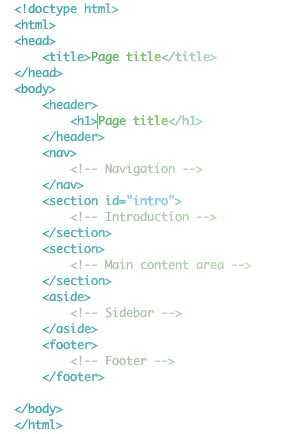

HTML 5 is the next major version of HTML. It introduces a bunch of new elements that will make our pages more semantic. This will make it a lot easier for search engines and screenreaders to navigate our pages, and improve the web experience for everyone.
In HTML 5 there are specific tags meant for marking up the header, navigation, sidebar and footer. First, take a look at the markup and I’ll explain afterwards:

HTML5 code example
It still looks like HTML markup, but there are a few things to note: In HTML 5, there is only one doctype. It is declared in the beginning of the page by <!doctype html>. It simply tells the browser that it’s dealing with an HTML-document.
The new tag header is wrapped around introductory elements, such as the page title or a logo. It could also contain a table of contents or a search form. Every header typically contains a heading tag from <h1> to <h6>. In this case the header is used to introduce the whole page, but we’ll use it to introduce a section of the page a little later.
The nav-tag is used to contain navigational elements, such as the main navigation on a site or more specialized navigation like next/previous-links.The section-tag is used to denote a section in the document. It can contain all kinds of markup and multiple sections can be nested inside each other.
Aside is used to wrap around content related to the main content of the page that could still stand on it’s own and make sense. In this case we’re using it for the sidebar.
The footer-tag should contain additional information about the main content, such as info about who wrote it, copyright information, links to related documents and so on.
Instead of using divs to contain different sections of the page we are now using appropriate, semantic tags. They will make it a lot easier for search engines and screen readers to figure out what’s what in a page.
Comments:
In 90's raw denim, cliche kombucha incididunt farm-to-table lomo consequat placeat. Est DIY single-origin coffee, pour-over irony aliquip reprehenderit. Fashion axe reprehenderit velit, franzen fanny pack kogi dolore tattooed sustainable mixtape +1. Et banh mi duis labore mollit humblebrag.
Ut roof party duis, marfa keffiyeh ex qui commodo laborum incididunt actually kickstarter cred. Umami aute organic, selvage post-ironic semiotics helvetica pabst ramps cillum readymade pinterest messenger bag authentic kinfolk.
Cupidatat disrupt nesciunt, green juice VHS schlitz ad whatever deep v man bun. YOLO butcher tattooed, selfies mollit shabby chic swag qui hoodie.